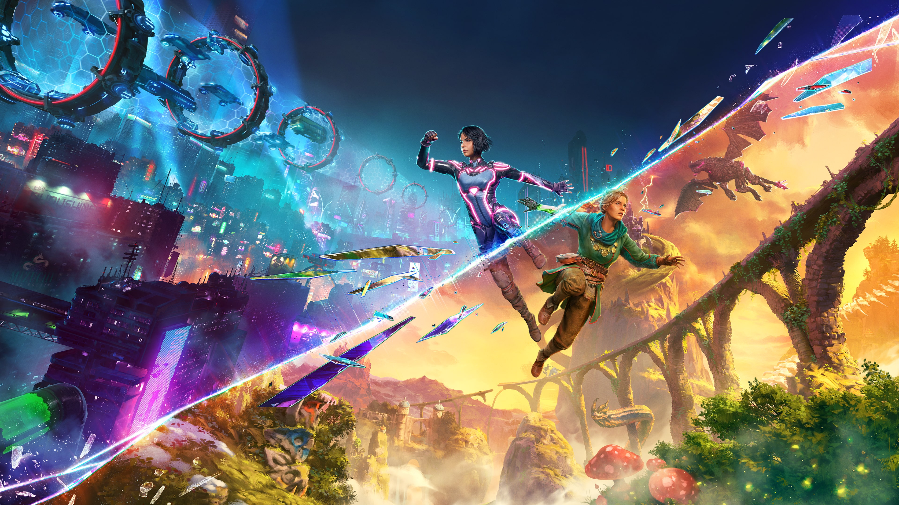
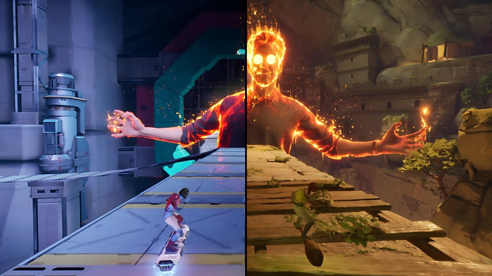
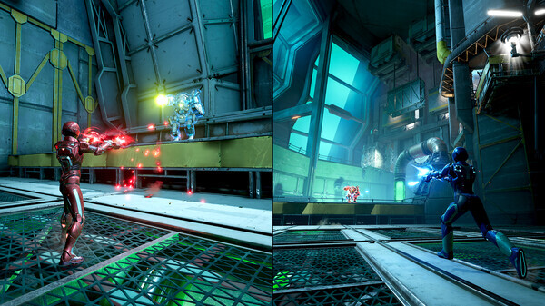

Split Fiction




Вас ждут ошеломительные моменты и разнообразные миры в Split Fiction — новаторском совместном приключении от студии, создавшей It Takes Two.
Минимальные требования:
- ОС: Windows 10 64-bit
- Процессор: Intel Core i5-6600K или AMD Ryzen 5 2600X
- ОЗУ: 16 GB
- Видеокарта: NVIDIA GeForce GTX 970 (4 ГБ) или AMD Radeon RX 470 (4 ГБ)
- Место: 85 GB
Рекомендуемые требования:
- ОС: Windows 10 64-bit
- Процессор: Intel Core i7-11700k или AMD Ryzen 7 5800X
- ОЗУ: 16 GB
- Видеокарта: NVIDIA GeForce RTX 3070 (8 ГБ) или AMD Radeon 6700 XT (12 ГБ)
- Место: 85 GB